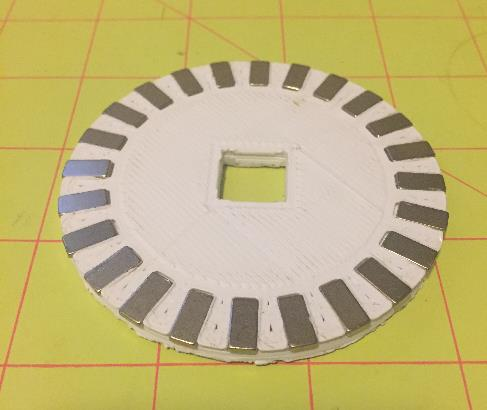
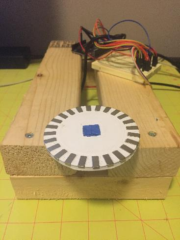

DEV-02: Determine if we should use a tone ring vs. existing single magnet design
Added by J. Simmons over 5 years ago
This thread will track the research/testing related to 2017 PBI DEV-02. This PBI is about the sensitivity of Holoseat to the user's pedaling. While the v0.3 Hall effect based sensors are a significant step forward over previous reed switch designs, Holoseat's responsiveness in game play was still a major concern from testers at last year's SyndCon. We are considering whether the use of a tone ring (an arrangement of multiple magnets passing by "one" sensor to increase the frequency of signaling events) as a means of improving the sensitivity.
Note, this PBI is just about determining if changing to a tone ring is justified. It is not about developing a tone ring implementation. The determination should be backed up by technical evidence. This evidence could come in the form of testing, research, or a combination of the two.
Replies (6)
RE: DEV-02: Determine if we should use a tone ring vs. existing single magnet design - Added by J. Simmons over 5 years ago
While I have some ideas for a quick and cheap modification to Holoseat to test the idea of a tone ring, I thought I would begin this PBI by conducting a little research. A google search for "tone ring" quickly pointed me to the Wikipedia article on wheel speed sensors which consist of a "toothed ring and a pickup".
According to the wiki article, wheel speed sensors based on Hall effect sensors can get between 60 and 300 pulses per revolution (compared to Holoseat's current pulse rate of 1 per revolution). With players typically pedaling at 60+ RPM, even the low end of performance quoted in the wiki article could take us up to 3600 Hz pedaling signals (versus about 60 Hz today). This alone is enough to warrant further research, with special consideration for commercial wheel speed sensors.
For reference, here is a short video describing how wheel speed sensors work.
RE: DEV-02: Determine if we should use a tone ring vs. existing single magnet design - Added by J. Simmons over 5 years ago
A little more googling, this time for wheel speed sensors with direction yields this interesting find: the TLE4966. This is a $1.02 to $1.45 Hall effect based wheel speed sensor that has "built in direction detection ... [that] provides with each index step a valid direction signal." Including the direction as part of the sensor signals greatly simplifies the controller firmware, and $1.02 is far cheaper than our current sensor configuration. Plus, where there is one product there may be many more.
For reference, here are some more links about the TLE4996
RE: DEV-02: Determine if we should use a tone ring vs. existing single magnet design - Added by J. Simmons over 5 years ago
One last note tonight, another name for the toothed wheel used with a wheel speed sensor is a pole wheel. Here is an example pole wheel data sheet. I still need to research how to match up a pole wheel with a wheel speed sensor before I can do much more work.
RE: DEV-02: Determine if we should use a tone ring vs. existing single magnet design - Added by J. Simmons over 5 years ago
OK, I think I have finally found an example of the type of pole wheel we are looking for (after googling for "magnetic pole wheel"): magnetic target wheels. Check out the schematic for the Phoenix America target wheel (scroll to the bottom of the page). While that is not the wheel we are looking for (it is too large), it is clearly the type of wheel we are looking for. Just compare it to the pole wheel image in the sensor product brief, it is the same class of component.
These target wheels are not cheap (this is closer to the scale of the wheel we would need, and it costs $3-$9 depending on quantity). So, part of the question becomes what is a reasonable estimate for what it would cost us for the target wheel we need.
RE: DEV-02: Determine if we should use a tone ring vs. existing single magnet design - Added by J. Simmons over 5 years ago
Just a quick note, we are spending over $5.50 for our sensor configuration in v0.3 (this includes the sensors, the board, other components, and the magnet). Any improvement in this design will require additional magnets (@ $0.77) and structure to hold the magnets. These costs could easily account for an additional $5-$10 plus require custom design and not yield the sensitivity or simplicity we would get with commercial wheel speed sensors.
My recommendation (and the conclusion of this PBI) is two-fold:
- We move to commercial wheel speed sensors for v0.4 and beyond
- At our earliest opportunity we contact some vendors to get firm details on requirements and pricing for appropriate wheel speed sensors and target wheels
RE: DEV-02: Determine if we should use a tone ring vs. existing single magnet design - Added by J. Simmons over 5 years ago
I am going to close out this thread by posting the results of my initial testing of our selected sensor (TLE4966L). The target wheel (see below) was designed by Bryan and a volunteer and 3D printed, with magnets inserted with alternating poles face up per the sensor documentation.

I then modified one of the CAD models used with the test rig to design an adapter for the target wheel so it could be mounted on the test rig. The fit was just about right, the target wheel just needed some filing in a couple of high spots and the adapter needed a layer of painters tape to make the friction fit tight.

With the target wheel mounted, it was time to turn to the sensor. This new sensor has four pins, which include direction and speed pins (see image and table below). I proceeded to wire the sensor up using 3.3v for supply voltage, since the sensor works as low as 2.7v and our hardware is 3.3v logic not 5v logic, and the same input pins as we used in v0.3 (see table below).
| Sensor Pin | Function | Arduino Pin |
| 1 | Supply Voltage | 3.3v |
| 2 | Direction | 2 |
| 3 | Speed | 3 |
| 4 | Ground | GND |
However, when I tried to take readings from the sensor, I was getting very odd results. The direction pin worked in one direction, but not the other (it would oscillate reported directions for CW rotations). And the speed pin would not report any values.
I tried a number of variations of the wiring and input reading code with no consistent luck. Then I reviewed the internal diagram for the sensor again and realized the speed pin was basically the raw output from one of the built-in hall effect sensors. So, I went back to the v0.3 sensor schematics and remembered the 750 ohm resistor between the data line and the supply voltage on the hall effect sensors.
Once I added the correct resistor to the speed pin it started working. So, I tried the same fix on the direction pin and it also starting working. I will work with Bryan to update the v0.4 schematics to reflect the pair of resistors required in the sensor circuit.
The code is much simpler with the new sensor (see below). We only have to count timing for the cadence calculation. The direction is read directly from the new sensor. Also note the NumPoles variable. This accounts for the 12 pair of alternating magnets in the 24 magnet target wheel.
#include <math.h>
const int CadencePin = 3; // pin used to measure cadence
const int DirectionPin = 2; // pin to read direction
const int NumPoles = 12; // number of magnetic pole pairs on the tone ring
volatile unsigned long LastStepTime; // last time the step sensor was triggered
volatile float SensedDeltaT; // deltaT as calculated during interrupt calls
volatile boolean WalkingForward; // walking direction state
float Cadence; // pedalling speed
// common function to attach/detach interrupts
void EnableSensors(unsigned int enable) {
if (enable) {
attachInterrupt(digitalPinToInterrupt(CadencePin), DetectCadence, FALLING);
//attachInterrupt(DirectionInterruptNumber, DetermineDirection, FALLING);
}
else {
detachInterrupt(digitalPinToInterrupt(CadencePin));
//detachInterrupt(DirectionInterruptNumber);
}
}
// interrupt function used to measure cadence
void DetectCadence() {
unsigned long currentTime = millis();
SensedDeltaT = (currentTime - LastStepTime);
LastStepTime = currentTime;
WalkingForward = digitalRead(DirectionPin); // CCW is forward
}
// resets walking state variables, used when holoseat is disabled
void InitializeWalkingVariables() {
Cadence = 0.0;
SensedDeltaT = 5000; // initialize sensed deltaT (and the value used to compute it, LastStepTime) to 5 seconds in the past
LastStepTime = millis() - 5000; // as above
WalkingForward = true;
}
// the setup function runs once when you press reset or power the board
void setup() {
pinMode(DirectionPin, INPUT);
pinMode(CadencePin, INPUT);
InitializeWalkingVariables();
EnableSensors(true);
Serial.begin(57600);
Serial.println("r"); // send ready signal
}
// the loop function runs over and over again forever
void loop() {
delay(10);
EnableSensors(false);
// calculate the Cadence
unsigned long currentTime = millis();
float localDeltaT = (currentTime - LastStepTime);
float deltaT = max(SensedDeltaT, localDeltaT)/1000; // in seconds
Cadence = round(60.0/deltaT/NumPoles); // in RPM
if (WalkingForward)
Serial.print("+");
else
Serial.print("-");
Serial.print((int)Cadence);
Serial.println("");
EnableSensors(true);
}
{kind=link}
{kind=link}
{kind=link}
(1-6/6)